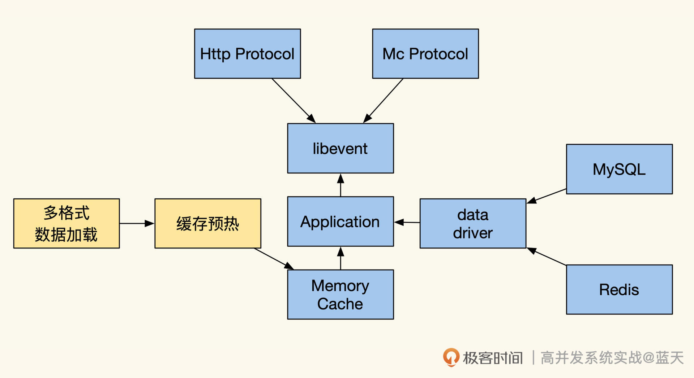

- 00 开篇词 高并发系统，技术实力的试金石.md.html
- 01 结构梳理：大并发下，你的数据库表可能成为性能隐患.md.html
- 02 缓存一致：读多写少时，如何解决数据更新缓存不同步？.md.html
- 03 Token：如何降低用户身份鉴权的流量压力？.md.html
- 04 同城双活：如何实现机房之间的数据同步？.md.html
- 05 共识Raft：如何保证多机房数据的一致性？.md.html
- 06 领域拆分：如何合理地拆分系统？.md.html
- 07 强一致锁：如何解决高并发下的库存争抢问题？.md.html
- 08 系统隔离：如何应对高并发流量冲击？.md.html
- 09 分布式事务：多服务的2PC、TCC都是怎么实现的？.md.html
- 10 稀疏索引：为什么高并发写不推荐关系数据库？.md.html
- 11 链路追踪：如何定制一个分布式链路跟踪系统 ？.md.html
- 12 引擎分片：Elasticsearch如何实现大数据检索？.md.html
- 13 实时统计：链路跟踪实时计算中的实用算法.md.html
- 14 跳数索引：后起新秀ClickHouse.md.html
- 15 实践方案：如何用C++自实现链路跟踪？.md.html
- 16 本地缓存：用本地缓存做服务会遇到哪些坑？.md.html
- 17 业务脚本：为什么说可编程订阅式缓存服务更有用？.md.html
- 18 流量拆分：如何通过架构设计缓解流量压力？.md.html
- 19 流量调度：DNS、全站加速及机房负载均衡.md.html
- 20 数据引擎：统一缓存数据平台.md.html
- 21 业务缓存：元数据服务如何实现？.md.html
- 22 存储成本：如何推算日志中心的实现成本？.md.html
- 23 网关编程：如何通过用户网关和缓存降低研发成本？.md.html
- 24 性能压测：压测不完善，效果减一半.md.html
- 答疑课堂 思考题答案（一）.md.html
- 结束语 为者常成，行者常至.md.html
- 捐赠
17 业务脚本：为什么说可编程订阅式缓存服务更有用？
你好，我是徐长龙。
我们已经习惯了使用缓存集群对数据做缓存，但是这种常见的内存缓存服务有很多不方便的地方，比如集群会独占大量的内存、不能原子修改缓存的某一个字段、多次通讯有网络损耗。
很多时候我们获取数据并不需要全部字段，但因为缓存不支持筛选，批量获取数据的场景下性能就会下降很多。这些问题在读多写多的场景下，会更加明显。
有什么方式能够解决这些问题呢？这节课，我就带你了解另外一种有趣的数据缓存方式——可编程订阅式缓存服务。学完今天的内容，相信你会对缓存服务如何做产生新的思考。
缓存即服务
可编程订阅式缓存服务的意思是，我们可以自行实现一个数据缓存服务直接提供给业务服务使用，这种实现能够根据业务的需要，主动缓存数据并提供一些数据整理和计算的服务。
自实现的数据缓存服务虽然繁琐，但同时也有很多优势，除去吞吐能力的提升，我们还可以实现更多有趣的定制功能，还有更好的计算能力，甚至可以让我们的缓存直接对外提供基础数据的查询服务。

上图是一个自实现的缓存功能结构，可以说这种缓存的性能和效果更好，这是因为它对数据的处理方式跟传统模式不同。
传统模式下，缓存服务不会对数据做任何加工，保存的是系列化的字符串，大部分的数据无法直接修改。当我们使用这种缓存对外进行服务时，业务服务需要将所有数据取出到本地内存，然后进行遍历加工方可使用。
而可编程缓存可以把数据结构化地存在map中，相比传统模式序列化的字符串，更节省内存。
更方便的是，我们的服务无需再从其他服务取数据来做计算，这样会节省大量网络交互耗时，适合用在实时要求极高的场景里。如果我们的热数据量很大，可以结合RocksDB等嵌入式引擎，用有限的内存提供大量数据的服务。
除了常规的数据缓存服务外，可编程缓存还支持缓存数据的筛选过滤、统计计算、查询、分片、数据拼合。关于查询服务,我补充说明一下，对外的服务建议通过类似Redis的简单文本协议提供服务，这样会比HTTP协议性能会更好。
Lua脚本引擎
虽然缓存提供业务服务能提高业务灵活度，但是这种方式也有很多缺点，最大的缺点就是业务修改后，我们需要重启服务才能够更新我们的逻辑。由于内存中保存了大量的数据，重启一次数据就需要繁琐的预热，同步代价很大。
为此，我们需要给设计再次做个升级。这种情况下，lua脚本引擎是个不错的选择。lua是一个小巧的嵌入式脚本语言，通过它可以实现一个高性能、可热更新的脚本服务，从而和嵌入的服务高效灵活地互动。
我画了一张示意图，描述了如何通过lua脚本来具体实现可编程缓存服务：

如上图所示，可以看到我们提供了Kafka消费、周期任务管理、内存缓存、多种数据格式支持、多种数据驱动适配这些服务。不仅仅如此，为了减少由于逻辑变更导致的服务经常重启的情况，我们还以性能损耗为代价，在缓存服务里嵌入了lua脚本引擎，借此实现动态更新业务的逻辑。
lua引擎使用起来很方便，我们结合后面这个实现例子看一看，这是一个Go语言写的嵌入lua实现，代码如下所示：
package main
import "github.com/yuin/gopher-lua"
// VarChange 用于被lua调用的函数
func VarChange(L *lua.LState) int {
lv := L.ToInt(1) //获取调用函数的第一个参数，并且转成int
L.Push(lua.LNumber(lv * 2)) //将参数内容直接x2，并返回结果给lua
return 1 //返回结果参数个数
}
func main() {
L := lua.NewState() //新lua线程
defer L.Close() //程序执行完毕自动回收
// 注册lua脚本可调用函数
// 在lua内调用varChange函数会调用这里注册的Go函数 VarChange
L.SetGlobal("varChange", L.NewFunction(VarChange))
//直接加载lua脚本
//脚本内容为：
// print "hello world"
// print(varChange(20)) # lua中调用go声明的函数
if err := L.DoFile("hello.lua"); err != nil {
panic(err)
}
// 或者直接执行string内容
if err := L.DoString(`print("hello")`); err != nil {
panic(err)
}
}
// 执行后输出结果：
//hello world
//40
//hello
从这个例子里我们可以看出，lua引擎是可以直接执行lua脚本的，而lua脚本可以和Golang所有注册的函数相互调用，并且可以相互传递交换变量。
回想一下，我们做的是数据缓存服务，所以需要让lua能够获取修改服务内的缓存数据，那么，lua是如何和嵌入的语言交换数据的呢？我们来看看两者相互调用交换的例子：
package main
import (
"fmt"
"github.com/yuin/gopher-lua"
)
func main() {
L := lua.NewState()
defer L.Close()
//加载脚本
err := L.DoFile("vardouble.lua")
if err != nil {
panic(err)
}
// 调用lua脚本内函数
err = L.CallByParam(lua.P{
Fn: L.GetGlobal("varDouble"), //指定要调用的函数名
NRet: 1, // 指定返回值数量
Protect: true, // 错误返回error
}, lua.LNumber(15)) //支持多个参数
if err != nil {
panic(err)
}
//获取返回结果
ret := L.Get(-1)
//清理下，等待下次用
L.Pop(1)
//结果转下类型，方便输出
res, ok := ret.(lua.LNumber)
if !ok {
panic("unexpected result")
}
fmt.Println(res.String())
}
// 输出结果：
// 30
其中vardouble.lua内容为：
function varDouble(n)
return n * 2
end
通过这个方式，lua和Golang就可以相互交换数据和相互调用。对于这种缓存服务普遍要求性能很好，这时我们可以统一管理加载过lua的脚本及LState脚本对象的实例对象池，这样会更加方便，不用每调用一次lua就加载一次脚本，方便获取和使用多线程、多协程。
Lua脚本统一管理
通过前面的讲解我们可以发现，在实际使用时，lua会在内存中运行很多实例。为了更好管理并提高效率，我们最好用一个脚本管理系统来管理所有lua的实运行例子，以此实现脚本的统一更新、编译缓存、资源调度和控制单例。
lua脚本本身是单线程的，但是它十分轻量，一个实例大概是144kb的内存损耗，有些服务平时能跑成百上千个lua实例。
为了提高服务的并行处理能力，我们可以启动多协程，让每个协程独立运行一个lua线程。为此，gopher-lua库提供了一个类似线程池的实现，通过这个方式我们不需要频繁地创建、关闭lua，官方例子具体如下：
//保存lua的LState的池子
type lStatePool struct {
m sync.Mutex
saved []*lua.LState
}
// 获取一个LState
func (pl *lStatePool) Get() *lua.LState {
pl.m.Lock()
defer pl.m.Unlock()
n := len(pl.saved)
if n == 0 {
return pl.New()
}
x := pl.saved[n-1]
pl.saved = pl.saved[0 : n-1]
return x
}
//新建一个LState
func (pl *lStatePool) New() *lua.LState {
L := lua.NewState()
// setting the L up here.
// load scripts, set global variables, share channels, etc...
//在这里我们可以做一些初始化
return L
}
//把Lstate对象放回到池中，方便下次使用
func (pl *lStatePool) Put(L *lua.LState) {
pl.m.Lock()
defer pl.m.Unlock()
pl.saved = append(pl.saved, L)
}
//释放所有句柄
func (pl *lStatePool) Shutdown() {
for _, L := range pl.saved {
L.Close()
}
}
// Global LState pool
var luaPool = &lStatePool{
saved: make([]*lua.LState, 0, 4),
}
//协程内运行的任务
func MyWorker() {
//通过pool获取一个LState
L := luaPool.Get()
//任务执行完毕后，将LState放回pool
defer luaPool.Put(L)
// 这里可以用LState变量运行各种lua脚本任务
//例如 调用之前例子中的的varDouble函数
err = L.CallByParam(lua.P{
Fn: L.GetGlobal("varDouble"), //指定要调用的函数名
NRet: 1, // 指定返回值数量
Protect: true, // 错误返回error
}, lua.LNumber(15)) //这里支持多个参数
if err != nil {
panic(err) //仅供演示用，实际生产不推荐用panic
}
}
func main() {
defer luaPool.Shutdown()
go MyWorker() // 启动一个协程
go MyWorker() // 启动另外一个协程
/* etc... */
}
通过这个方式我们可以预先创建一批LState，让它们加载好所有需要的lua脚本，当我们执行lua脚本时直接调用它们，即可对外服务，提高我们的资源复用率。
变量的交互
事实上我们的数据既可以保存在lua内，也可以保存在Go中，通过相互调用来获取对方的数据。个人习惯将数据放在Go中封装，供lua调用，主要是因为这样相对规范、比较好管理，毕竟脚本会有损耗。
前面提到过，我们会将一些数据用struct和map组合起来，对外提供数据服务。那么lua和Golang如何交换struct一类数据呢？
这里我选择了官方提供的例子，但额外加上了大量注释，帮助你理解这个交互过程。
// go用于交换的 struct
type Person struct {
Name string
}
//为这个类型定义个类型名称
const luaPersonTypeName = "person"
// 在LState对象中，声明这种类型，这个只会在初始化LState时执行一次
// Registers my person type to given L.
func registerPersonType(L *lua.LState) {
//在LState中声明这个类型
mt := L.NewTypeMetatable(luaPersonTypeName)
//指定 person 对应 类型type 标识
//这样 person在lua内就像一个 类声明
L.SetGlobal("person", mt)
// static attributes
// 在lua中定义person的静态方法
// 这句声明后 lua中调用person.new即可调用go的newPerson方法
L.SetField(mt, "new", L.NewFunction(newPerson))
// person new后创建的实例，在lua中是table类型，你可以把table理解为lua内的对象
// 下面这句主要是给 table定义一组methods方法，可以在lua中调用
// personMethods是个map[string]LGFunction
// 用来告诉lua，method和go函数的对应关系
L.SetField(mt, "__index", L.SetFuncs(L.NewTable(), personMethods))
}
// person 实例对象的所有method
var personMethods = map[string]lua.LGFunction{
"name": personGetSetName,
}
// Constructor
// lua内调用person.new时，会触发这个go函数
func newPerson(L *lua.LState) int {
//初始化go struct 对象 并设置name为 1
person := &Person{L.CheckString(1)}
// 创建一个lua userdata对象用于传递数据
// 一般 userdata包装的都是go的struct，table是lua自己的对象
ud := L.NewUserData()
ud.Value = person //将 go struct 放入对象中
// 设置这个lua对象类型为 person type
L.SetMetatable(ud, L.GetTypeMetatable(luaPersonTypeName))
// 将创建对象返回给lua
L.Push(ud)
//告诉lua脚本，返回了数据个数
return 1
}
// Checks whether the first lua argument is a *LUserData
// with *Person and returns this *Person.
func checkPerson(L *lua.LState) *Person {
//检测第一个参数是否为其他语言传递的userdata
ud := L.CheckUserData(1)
// 检测是否转换成功
if v, ok := ud.Value.(*Person); ok {
return v
}
L.ArgError(1, "person expected")
return nil
}
// Getter and setter for the Person#Name
func personGetSetName(L *lua.LState) int {
// 检测第一个栈，如果就只有一个那么就只有修改值参数
p := checkPerson(L)
if L.GetTop() == 2 {
//如果栈里面是两个，那么第二个是修改值参数
p.Name = L.CheckString(2)
//代表什么数据不返回，只是修改数据
return 0
}
//如果只有一个在栈，那么是获取name值操作，返回结果
L.Push(lua.LString(p.Name))
//告诉会返回一个参数
return 1
}
func main() {
// 创建一个lua LState
L := lua.NewState()
defer L.Close()
//初始化 注册
registerPersonType(L)
// 执行lua脚本
if err := L.DoString(`
//创建person，并设置他的名字
p = person.new("Steven")
print(p:name()) -- "Steven"
//修改他的名字
p:name("Nico")
print(p:name()) -- "Nico"
`); err != nil {
panic(err)
}
}
可以看到，我们通过lua脚本引擎就能很方便地完成相互调用和交换数据，从而实现很多实用的功能，甚至可以用少量数据直接写成lua脚本的方式来加载服务。- 另外，gopher-lua还提供了模块功能，帮助我们更好地管理脚本和代码，有兴趣的话可以自行深入，参考资料在这里。
缓存预热与数据来源
了解了lua后，我们再看看服务如何加载数据。服务启动时，我们需要将数据缓存加载到缓存中，做缓存预热，待数据全部加载完毕后，再开放对外的API端口对外提供服务。
加载过程中如果用上了lua脚本，就可以在服务启动时对不同格式的数据做适配加工，这样做也能让数据来源更加丰富。
常见的数据来源是大数据挖掘周期生成的全量数据离线文件，通过NFS或HDFS挂载定期刷新、加载最新的文件。这个方式适合数据量大且更新缓慢的数据，缺点则是加载时需要整理数据，如果情况足够复杂，800M大小的数据要花1～10分钟方能加载完毕。
除了使用文件方式外，我们也可以在程序启动后扫数据表恢复数据，但这么做数据库要承受压力，建议使用专用的从库。但相对磁盘离线文件的方式，这种方式加载速度更慢。
上面两种方式加载都有些慢，我们还可以将 RocksDB 嵌入到进程中，这样做可以大幅度提高我们的数据存储容量，实现内存磁盘高性能读取和写入。不过代价就是相对会降低一些查询性能。
RocksDB的数据可以通过大数据生成RocksDB格式的数据库文件，拷贝给我们的服务直接加载。这种方式可以大大减少系统启动中整理、加载数据的时间，实现更多的数据查询。
另外，如果我们对于本地有关系数据查询需求，也可以嵌入 SQLite 引擎，通过这个引擎可以做各种关系数据查询，SQLite的数据的生成也可以通过工具提前生成，给我们服务直接使用。但你要注意这个数据库不要超过10w条数据，否则很可能导致服务卡顿。
最后，对于离线文件加载，最好做一个CheckSum一类的文件，用来在加载文件之前检查文件的完整性。由于我们使用的是网络磁盘，不太确定这个文件是否正在拷贝中，需要一些小技巧保证我们的数据完整性，最粗暴的方式就是每次拷贝完毕后生成一个同名的文件，内部记录一下它的CheckSum，方便我们加载前校验。
离线文件能够帮助我们快速实现多个节点的数据共享和统一，如果我们需要多个节点数据保持最终一致性，就需要通过离线+同步订阅方式来实现数据的同步。
订阅式数据同步及启动同步
那么，我们的数据是如何同步更新的呢？
正常情况下，我们的数据来源于多个基础数据服务。如果想实时同步数据的更改，我们一般会通过订阅binlog将变更信息同步到Kafka，再通过Kafka的分组消费来通知分布在不同集群中的缓存。
收到消息变更的服务会触发lua脚本，对数据进行同步更新。通过lua我们可以触发式同步更新其他相关缓存，比如用户购买一个商品，我们要同步刷新他的积分、订单和消息列表个数。
周期任务
提到任务管理，不得不提一下周期任务。周期任务一般用于刷新数据的统计，我们通过周期任务结合lua自定义逻辑脚本，就能实现定期统计，这给我们提供了更多的便利。
定期执行任务或延迟刷新的过程中，常见的方式是用时间轮来管理任务，用这个方式可以把定时任务做成事件触发，这样能轻松地管理内存中的待触发任务列表，从而并行多个周期任务，无需使用sleep循环方式不断查询。对时间轮感兴趣的话，你可以点击这里查看具体实现。
另外，前面提到我们的很多数据都是通过离线文件做批量更新的，如果是一小时更新一次，那么一小时内新更新的数据就需要同步。
一般要这样处理：在我们服务启动加载的离线文件时，保存离线文件生成的时间，通过这个时间来过滤数据更新队列中的消息，等到我们的队列任务进度追到当前时间附近时，再开启对外数据的服务。
总结
读多写多的服务中，实时交互类服务非常多，对数据的实时性要求也很高，用集中型缓存很难满足服务所需。为此，行业里多数会通过服务内存数据来提供实时交互服务，但这么做维护起来十分麻烦，重启后需要恢复数据。为了实现业务逻辑无重启的更新，行业里通常会使用内嵌脚本的热更新方案。
常见的通用脚本引擎是lua，这是一个十分流行且方便的脚本引擎，在行业中，很多知名游戏及服务都使用lua来实现高性能服务的定制化业务功能，比如Nginx、Redis等。
把lua和我们的定制化缓存服务结合起来，即可制作出很多强大的功能来应对不同的场景。由于lua十分节省内存，我们在进程中开启成千上万的lua小线程，甚至一个用户一个LState线程对客户端提供状态机一样的服务。
用上面的方法，再结合lua和静态语言交换数据相互调用，并配合上我们的任务管理以及各种数据驱动，就能完成一个几乎万能的缓存服务。推荐你在一些小项目中亲自实践一下，相信会让你从不同视角看待已经习惯的服务，这样会有更多收获。
思考题
如何让Go的协程访问一个LState保存的数据？
欢迎你在留言区与我交流讨论，我们下节课见！
© 2019 - 2023 Liangliang Lee. Powered by gin and hexo-theme-book.